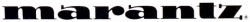
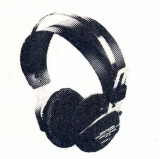
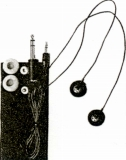
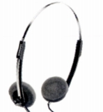
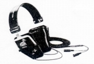

MARANTZ（マランツ）
アンプやＣＤプレーヤーを得意とする音響機器メーカー。2000年代では内蔵ヘッドフォンアンプが良質なSA-15S1等がヘッドフォン愛好家の間でも評価が高い。1953年にソウル・バーナード・マランツ氏が設立したアメリカのブランドだが、企業売却を繰り返し、現在ではDENON(デノン）との経営統合をし、ディーアンドエムホールディングスという会社が作られ、マランツブランドの製品の企画・開発はこの会社のものとなっている。
ヘッドフォンブランドとしては、1970年代はコンデンサー型ヘッドホン（日本製のOEM?)なども出していたようだが、ここで取り上げるのは1980年以降の製品である。1980年代当初は輸入ブランド扱いであったが、その後フィリップス傘下の日本マランツとなり、国内ブランドとなったものである。ヘッドフォンには、これといって特徴はなくOEM調達した製品と思われる。
�T.オーバーヘッド型

(HP-24)�U.インナーイヤー型

(HP-33)�V.小型軽量機

(HP-16)�W.サラウンドヘッドフォン
